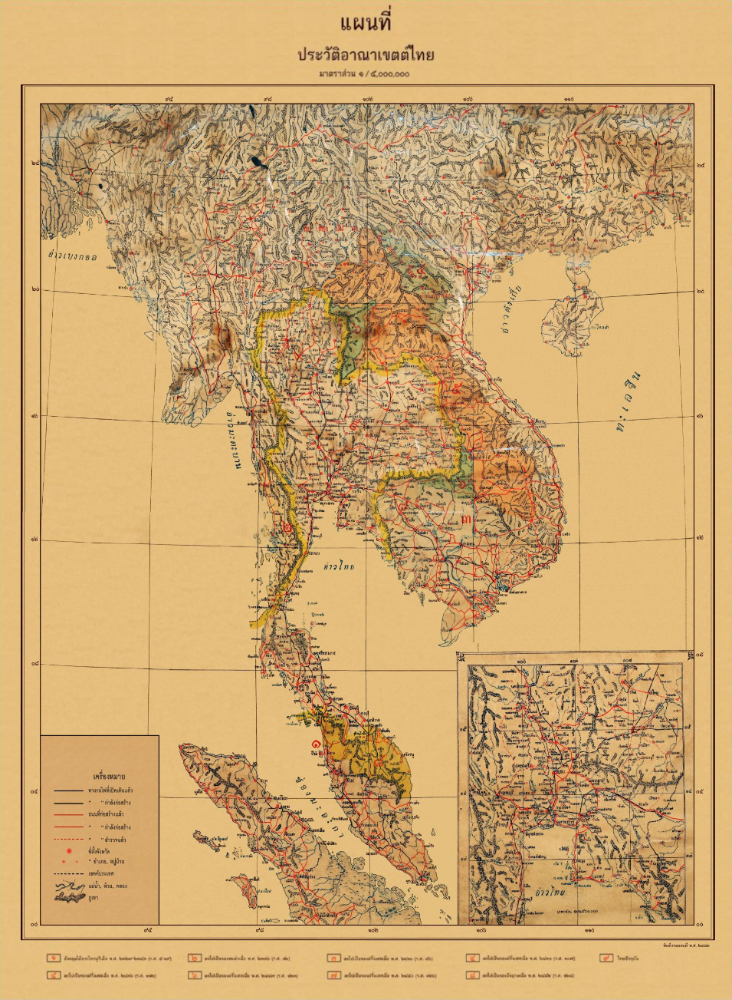

🇹🇭 تايلاند — دليل شامل للمستشار السياحي
دليل عملي ومحدث عن تايلاند: معلومات أساسية، برامج سياحية، معالم، مسافات، نصائح، وفيديوهات توضيحية.


ملخص مختصر
تايلاند تقع في جنوب شرق آسيا، وتُعرف باسم "أرض الابتسامات" لشعبها الودود وثقافتها الغنية. تجمع بين المعابد الذهبية المذهلة في بانكوك، والشواطئ الاستوائية الخلابة في بوكيت وكوه ساموي، والجبال الخضراء في شيانغ ماي، والأسواق الليلية النابضة. تتميز بأسعار اقتصادية، وطعام شهير عالمياً، وبنية سياحية متطورة. وجهة مثالية للعائلات والأزواج ومحبي الشواطئ والثقافة.
معلومات أساسية سريعة
التأشيرة والدخول
- الدخول بدون تأشيرة للمواطنين الخليجيين لمدة تصل إلى 30 يوماً.
- يُنصح بحمل تذاكر العودة وتأكيد الفندق.
- جواز السفر يجب أن يكون ساري المفعول لمدة 6 أشهر على الأقل.
- للإقامات الطويلة أو العمل، يجب مراجعة السفارة التايلاندية.
نقاط أساسية للمستشار
- الأمان: تايلاند من الدول الآمنة سياحياً، مناسبة للعائلات والمسافرين الأفراد.
- التكلفة: أسعار اقتصادية — وجبة بمطعم محلي من 60–150 بات، فندق 3 نجوم من 800–1500 بات/ليلة.
- الطقس: استوائي — حار ورطب، مع موسم جاف (نوفمبر-فبراير) وموسم أمطار (مايو-أكتوبر).
- المواصلات: مترو بانكوك (BTS/MRT)، تكاسي رخيصة، ورحلات داخلية متوفرة.
- الطعام: المطبخ التايلاندي من أشهر المطابخ عالمياً — باد تاي، توم يوم، كاري.
- الإنترنت: تتوفر شرائح SIM رخيصة (AIS، True، dtac) مع باقات إنترنت ممتازة.
- الدين: أغلبية بوذية، مع مساجد ومطاعم حلال متوفرة في المدن الكبرى.
المدن والمعالم الرئيسية
🏛️ بانكوك (العاصمة)
🏖️ بوكيت (لؤلؤة الجنوب)
⛰️ شيانغ ماي (وردة الشمال)
🏝️ الجزر والمنتجعات
أفكار برامج عملية
📋 جدول مقارنة البرامج
| النمط | المدة | النطاق | المناسب لـ |
|---|---|---|---|
| قصير | 3 أيام | بانكوك فقط | عطلة نهاية أسبوع |
| متوسط | 7 أيام | بانكوك • بوكيت | عائلات / أزواج |
| طويل | 10 أيام | بانكوك • شيانغ ماي • بوكيت | تجربة شاملة |
💡 نظرة سريعة
- بانكوك — مثالية للمعابد والتسوق والحياة الليلية.
- بوكيت — للشواطئ والجزر والأنشطة المائية.
- شيانغ ماي — للجبال والثقافة والفيلة.
- كوه ساموي — للاسترخاء والمنتجعات الفاخرة.
- كرابي — للشواطئ البكر وتسلق الصخور.
تفاصيل البرامج اليومية
برنامج قصير — بانكوك (3 أيام)
| اليوم | الفعاليات |
|---|---|
| 1 | الوصول إلى بانكوك، جولة في القصر الكبير، معبد وات فو. |
| 2 | معبد وات آرون، نهر تشاو فرايا، سوق تشاتوتشاك. |
| 3 | شارع خاو سان، سوق الليل (آسياتيك)، تسوق نهائي، ثم التوجه للمطار. |
برنامج متوسط — بانكوك + بوكيت (7 أيام)
| اليوم | الفعاليات |
|---|---|
| 1 | الوصول إلى بانكوك والاستراحة. |
| 2 | جولة في بانكوك: القصر الكبير، معبد وات فو، معبد وات آرون. |
| 3 | سوق تشاتوتشاك، نهر تشاو فرايا، سوق الليل. |
| 4 | الانتقال إلى بوكيت — شاطئ باتونغ. |
| 5 | رحلة إلى جزيرة في في — غطس وأنشطة مائية. |
| 6 | شاطئ كارون، شاطئ كاتا، المدينة القديمة، معبد وات تشالونغ. |
| 7 | العودة إلى بانكوك، تسوق نهائي، ثم المغادرة. |
برنامج طويل — جولة شاملة (10 أيام)
| اليوم | الفعاليات |
|---|---|
| 1 | الوصول إلى بانكوك والاستراحة. |
| 2 | جولة بانكوك الكاملة: القصر الكبير، معبد وات فو، معبد وات آرون. |
| 3 | سوق تشاتوتشاك، نهر تشاو فرايا، سوق الليل. |
| 4 | الانتقال إلى شيانغ ماي — المدينة القديمة. |
| 5 | معبد دوي سوثيب، جبل دوي إن تانون، محمية الفيلة. |
| 6 | سوق الليل (نايت بازار)، وادي بونغ، مطبخ تايلاندي. |
| 7 | الانتقال إلى بوكيت — شاطئ باتونغ. |
| 8 | رحلة إلى جزيرة في في — غطس وأنشطة مائية. |
| 9 | شاطئ كارون، شاطئ كاتا، المدينة القديمة، معبد وات تشالونغ. |
| 10 | العودة إلى بانكوك، تسوق نهائي، ثم المغادرة. |
المسافات بين المدن
| من | إلى | المدة | المسافة |
|---|---|---|---|
| بانكوك | باتايا | 2 ساعة | 150 كم |
| بانكوك | شيانغ ماي | 1 ساعة (طيران) • 9 ساعات (قطار) | 700 كم |
| بانكوك | بوكيت | 1.5 ساعة (طيران) | 850 كم |
| بوكيت | جزيرة في في | 2 ساعة (قارب) | 50 كم بحري |
| بانكوك | كوه ساموي | 1.5 ساعة (طيران) | 650 كم |
| بانكوك | كرابي | 1.5 ساعة (طيران) | 800 كم |
| بانكوك | أيوتايا | 1.5 ساعة | 80 كم |
| بانكوك | سوق تشاتوتشاك | 30 دقيقة (مترو) | 10 كم |
الطقس والمواسم
🌸 الربيع
مارس — مايو
حار جداً — مناسب للشواطئ والأنشطة المائية.
☀️ الصيف
يونيو — أغسطس
موسم الأمطار — أسعار أقل وجو أقل ازدحاماً.
🍂 الخريف
سبتمبر — نوفمبر
انتقال من المطر إلى الجفاف — أجواء لطيفة.
❄️ الشتاء
ديسمبر — فبراير
أفضل وقت للزيارة — جاف ومعتدل. ذروة الموسم.
نصائح عملية
💰 المال والصرف
- العملة الرسمية: البات التايلاندي (THB).
- صرف تقريبي: 1 دولار ≈ 35 بات (تحقق من السعر الحالي).
- تتوفر صرافات في كل مكان بأسعار جيدة.
- البطاقات (Visa/Mastercard) مقبولة في معظم الأماكن.
- احتفظ ببعض النقد للأسواق والمواصلات الصغيرة.
🍽️ الطعام والشراب
- باد تاي: نودلز مقلية — الطبق الأشهر.
- توم يوم كونغ: حساء الجمبري الحار.
- الكاري الأخضر: من أشهر الأطباق.
- الأرز اللزج بالمانجو: حلوى شهيرة.
- تتوفر مطاعم حلال معتمدة في المدن الكبرى.
🚗 المواصلات
- مترو بانكوك: BTS و MRT — ممتاز ويغطي المدينة.
- التكاسي: رخيصة لكن تأكد من استخدام العداد.
- التوك توك: تجربة ممتعة للرحلات القصيرة.
- الرحلات الداخلية: رخيصة ومتوفرة بين المدن.
- تطبيقات: Grab متوفرة في جميع المدن.
📱 اتصال وإنترنت
- شرائح SIM: AIS أو True أو dtac — تغطية ممتازة.
- الأسعار: باقات إنترنت جيدة من 200–400 بات.
- تتوفر شبكات Wi-Fi مجانية في معظم الفنادق والمقاهي.
- تطبيق Grab يستخدم للنقل والتوصيل.
- تطبيق Google Maps يعمل بكفاءة في تايلاند.
أرقام مهمة
فيديوهات توضيحية
خريطة الوجهة

⚠️ ملاحظة: هذه الصفحة مرجع تعليمي عام — تحقق من المعلومات الرسمية (التأشيرة، أسعار الصرف، القيود، وأرقام الطوارئ) قبل أي عرض للعميل. الأسعار والمعلومات قابلة للتغير.